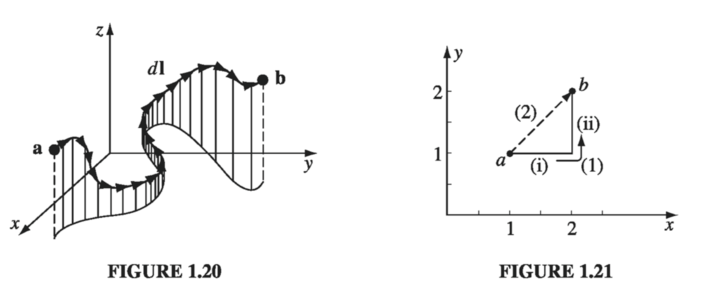

1.3: Integral Calculus
1.3.1: Line, Surface, and Volume Integrals
In electrodynamics, we encounter several different kinds of integrals, among which the most important are line (or path) integrals, surface integrals, and volume integrals.
Line Integrals
A line integral is an expression of the form where v is a vector function, is the infinitesimal displacement vector and the integral is to be carried out along a prescribed path P from point a to point b. If the path in question forms a closed loop (that is, if , then put a circle on the integral sign: At each point on the path, we take the dot product of v (evaluated at that point) with the displacement to the next point on the pat. To a physicist, the most familiar example of a line integral is the work done by a force :
Ordinarily, the value of a line integral depends critically on the path taken from a to b, but there is an important special class of vector functions for which the line integral is independent of path and is determined entirely by the end points. It will be our business in due course to characterize this special class of vectors. (A force that has this property is called conservative.)

Example 1.6
Calculate the line integral of the function from the point a = (1, 1, 0) to the point b = (2, 2, 0), along the paths (1) and (2) in Fig 1.21. What is for the loop that goes from a to b along (1) and returns to a along (2)?
Solution As always, . Path (1) consists of two parts. Along the "horizontal" segment, so On the "vertical" stretch, dx = dz = 0, so By path (1), then Meanwhile on path (2), and , so and (The strategy here is to get everything in terms of one variable; I could just as well have eliminated x in favor of y.)
For the loop that goes out (1) and back (2), then
Surface Integrals
A surface integral is an expression of the form where v is again some vector function, and the integral is over a specified surface . Here is an infinitesimal patch of area, with direction perpendicular to the surface (Fig 1.22). There are, of course, two directions perpendicular to any surface, so the sign of a surface integral is intrinsically ambiguous. If the surface is closed (forming a "balloon"), in which case I again put a circle on the integral sign then tradition dictates that "outward" is positive, but for open surfaces it's arbitrary. If v describes the flow of a fluid (mass per unit area per unit time), then represents the total mass per unit time passing through the surface - hence the alternative name, "flux."
Ordinarily, the value of a surface integral depends on the particular surface chosen, but there is a special class of vector functions for which it is independent of the surface and is determined entirely by the boundary line. An important task will be to characterize this special class of functions.

Example 1.7
Calculate the surface integral of over five sides (excluding the bottom) of the cubical box (side 2) in Fig 1.23. Let 'upward and outward' be the positive direction, as indicated by the arrows.
Solution Taking the sides one at a time (i) , so (ii) , so (iii) , so (iv) , so (v) , so The total flux is
Volume Integrals
A volume integral is an expression of the form where T is a scalar function and is an infinitesimal volume element. In Cartesian coordinates, For example, if T is the density of a substance (which might vary from point to point), then the volume integral would give the total mass. Occasionally we shall encounter volume integrals of vector functions: Because the unit vectors are constants, they come outside the integral.
Example 1.8
Calculate the volume integral of over the prism in Fig 1.24.

1.3.2: The Fundamental Theorem of Calculus
Suppose is a function in one variable. The fundamental theorem of calculus says In case this doesn't look familiar, I'll write it another way: where . The fundamental theorem tells you how to integrate : you think up a function whose derivative is equal to F.
Geometrical interpretation: According to Eq. 1.33, is the infinitesimal change in f when you go from (x) to (x + dx). The fundamental theorem (Eq. 1.54) says that if you chop the interval from a to b (Fig. 1.25) into many tiny pieces, dx, and add up the increments df from each little piece, the result is (not surprisingly) equal to the total change in f: . In other words, there are two ways to determine the total change in the function: either subtract the values at the ends or go step-by-step, adding up all the tiny increments as you go. You'll get the same answer either way.
Notice the basic format of the fundamental theorem: the integral of a derivative over some region is given by the value of the function at the end points (boundaries). In vector calculus there are three species of derivative (gradient, divergence, and curl), and each has its own "fundamental theorem," with essentially the same format. I don't plan to prove these theorems here; rather, I will explain what they mean, and try to make them plausible.
1.3.3: The Fundamental Theorem for Gradients
Suppose we have a scalar function of three variables T(x, y, z). Starting at point a, we move a small distance (Fig 1.26). According to Eq. 1.37, the function T will change by an amount
Now we move a little further, by an additional small displacement ; the incremental change in T will be . In this manner, proceeding by infinitesimal steps, we make the journey to point b. At each step we compute the gradient of T (at that point) and dot it into the displacement dl... this gives us the change in T. Evidently the total change in Tin going from a to b (along the path selected) is
This is the fundamental theorem for gradients; like the "ordinary" fundamental theorem, it says that the integral (here a line integral) of a derivative (here the gradient) is given by the value of the function at the boundaries (a and b).
Geometrical Interpretation: Suppose you wanted to determine the height of the Eiffel Tower. You could climb the stairs, using a ruler to measure the rise at each step, and adding them all up (that's the left side of Eq. 1.55), or you could place altimeters at the top and the bottom, and subtract the two readings (that's the right side); you should get the same answer either way (that's the fundamental theorem).
Incidentally, as we found in Ex. 1.6, line integrals ordinarily depend on the path taken from a to b. But the right side of Eq. 1.55 makes no reference to the path - only to the end points. Evidently, gradients have the special property that their line integrals are path independent:
Corollary 1: is independent of the path taken from a to b.
Corollary 2: , since the beginning and end points are identical, and hence .
Example 1.9
Let , and take point a to be the origin (0, 0, 0) and b to be the point (2, 1, 0). Check the fundamental theorem for gradients.
Solution
We know a priori that the integral should be independent of the path, but we must sill pick a specific path in order to evaluate it. Let's go out along the x axis, then up (Fig 1.27). As always,

1.3.4: The Fundamental Theorem for Divergences
The fundamental theorem for divergences states that
In honor, I suppose, of its great importance, this theorem has at least three special names: Gauss's theorem, Green's theorem, or simply the divergence theorem. Like the other "fundamental theorems," it says that the integral of a derivative (in this case the divergence) over a region (in this case a volume, V) is equal to the value of the function at the boundary (in this case the surface S that bounds the volume). Notice that the boundary term is itself an integral (specifically, a surface integral). This is reasonable: the "boundary" of a line is just two end points, but the boundary of a volume is a (closed) surface.
Geometrical Interpretation: If v represents the flow of an incompressible fluid, then the flux of v (the right side of Eq. 1.56) is the total amount of fluid passing out through the surface, per unit time. Now, the divergence measures the "spreading out" of the vectors from a point-a place of high divergence is like a "faucet," pouring out liquid. If we have a bunch of faucets in a region filled with incompressible fluid, an equal amount of liquid will be forced out through the boundaries of the region. In fact, there are two ways we could determine how much is being produced: (a) we could count up all the faucets, recording how much each puts out, or (b) we could go around the boundary, measuring the flow at each point, and add it all up. You get the same answer either way: This, in essence, is what the divergence theorem says.
Example 1.10
Check the divergence theorem using the function using a unit cube at the origin as the surface boundary (Fig 1.29).
Solution

In this case
and
Thus,
That takes care of the volume integral part of Gauss' Law, now how about the surface integral? We have to it in six parts, for each face of the cube: So the total flux is as we should expect.
1.3.5: The Fundamental Theorem for Curls
The fundamental theorem for curls, which goes by the name Stokes' Theorem, states that
As always, the integral of a derivative (here, the curl) over a region (here, a patch of surface, S) is equal to the value of the function at the boundary (here, the perimeter of the patch, P). As in the case of the divergence theorem, the boundary term is itself an integral-specifically, a closed line integral.
Geometrical Interpretation: Recall that the curl measures the "twist" of the vectors v; a region of high curl is a whirlpool - if you put a tiny paddle wheel there, it will rotate. Now, the integral of the curl over some surface (or, more precisely, the flux of the curl through that surface) represents the "total amount of swirl," and we can determine that just as well by going around the edge and finding how much the flow is following the boundary (Fig. 1.31). Indeed, is sometimes called the circulation of v.

You may have noticed an apparent ambiguity in Stokes' theorem: concerning the boundary line integral, which way are we supposed to go around (clockwise or counterclockwise)? If we go the "wrong" way, we'll pick up an overall sign error. The answer is that it doesn't matter which way you go as long as you are consistent, for there is a compensating sign ambiguity in the surface integral: Which way does point? For a closed surface (as in the divergence theorem), points in the direction of the outward normal; but for an open surface, which way is "out"? Consistency in Stokes' theorem (as in all such matters) is given by the right-hand rule: if your fingers point in the direction of the line integral, then your thumb fixes the direction of (Fig. 1.32).
Now, there are plenty of surfaces (infinitely many) that share any given boundary line. Twist a paper clip into a loop, and dip it in soapy water. The soap film constitutes a surface, with the wire loop as its boundary. If you blow on it, the soap film will expand, making a larger surface, with the same boundary. Ordinarily, a flux integral depends critically on what surface you integrate over, but evidently this is not the case with curls. For Stokes' theorem says that is equal to the line integral of around the boundary, and the latter makes no reference to the specific surface you choose.
Corollary 1: depends only on the boundary line, not on the particular surface used.
Corollary 2: for any closed surface, since the boundary line, like the mouth of a balloon, shrinks down to a point, and hence the right side of vanishes.
Example 1.11
Suppose . Check Stokes' theorem for the square surface shown in Fig 1.33.
Solution Here

1.3.6: Integration by Parts
The technique known (awkwardly) as integration by parts exploits the product rule for derivatives: Integrating both sides, and invoking the fundamental theorem, or
That's "integration by parts." It applies to the situation in which you are called upon to integrate the product of one function (f) and the derivative of another (g); it says you can transfer the derivative from g to f, at the cost of a minus sign and a boundary term.
Example 1.12
Evaluate the integral $$ \int _0 ^\infty x e^{-x} \dd x
Solution The exponential can be expressed as a derivative: in this case, then, , , and , so
We can exploit the product rules of vector calculus, together with the appropriate fundamental theorems, in exactly the same way. For example, integrating over a volume, and invoking the divergence theorem, yileds or Here again the integrand is the product of one function (f) and the derivative (in this case the divergence) of another (A), and integration by parts licenses us to transfer the derivative from A to f (where it becomes a gradient), at the cost of a minus sign and a boundary term (in this case a surface integral).
In practice, this turns out to be one of the most useful tools at our disposal in vector calculus. Though you might wonder how often you're really likely to encounter an integral involving the product of one function and the derivative of another, the answer is surprisingly often.